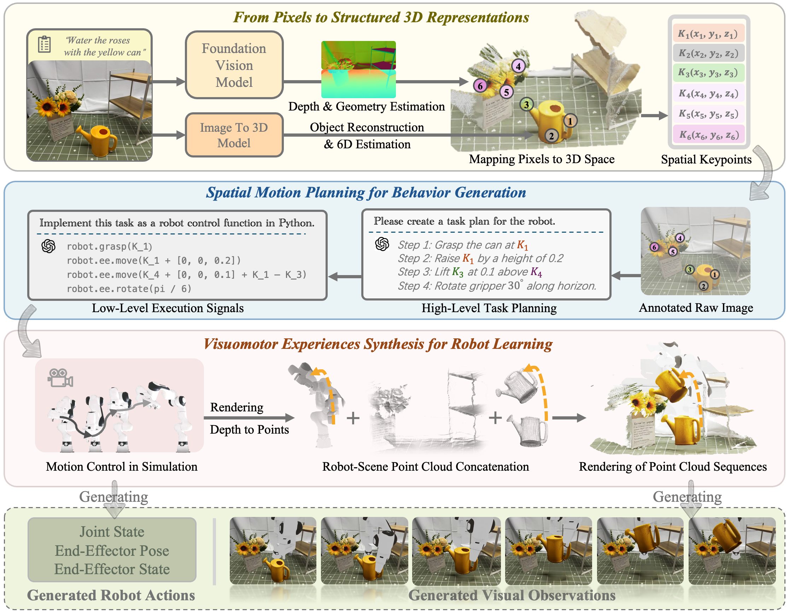

Turning unstructured 2D pixels into structured 3D scenes — and synthesizing realistic visuomotor data without a single human teleoperation.

Pipeline of IGen. Given an open-world image and a task description, IGen first reconstructs the environment and objects as point clouds via foundation vision models. After spatial keypoint extraction, a vision-language model maps the task description to high-level plans and low-level control commands. During the robot's execution in simulation, a virtual depth camera captures motion point-cloud sequences. The resulting end-effector pose trajectory drives the synthesis of dynamic point-cloud sequences, which are then rendered frame-by-frame into visual observations of the manipulation. The final output consists of the generated robot actions and the visual observations.
Starting from a single captured real-world scene image, IGen automatically generates 1,000 task demonstrations with spatial randomization. The resulting data are used to train a visuomotor policy, which is later deployed and evaluated on a real robot. The result suggests that IGen can serve as an effective and scalable alternative to human teleoperation for training robot policies.
@misc{gu2025igenscalabledatageneration,
title = {IGen: Scalable Data Generation for Robot Learning from Open-World Images},
author = {Chenghao Gu and Haolan Kang and Junchao Lin and Jinghe Wang and
Duo Wu and Shuzhao Xie and Fanding Huang and Junchen Ge and
Ziyang Gong and Letian Li and Hongying Zheng and Changwei Lv and Zhi Wang},
year = {2025},
eprint = {2512.01773},
archivePrefix = {arXiv},
primaryClass = {cs.RO},
url = {https://arxiv.org/abs/2512.01773}
}